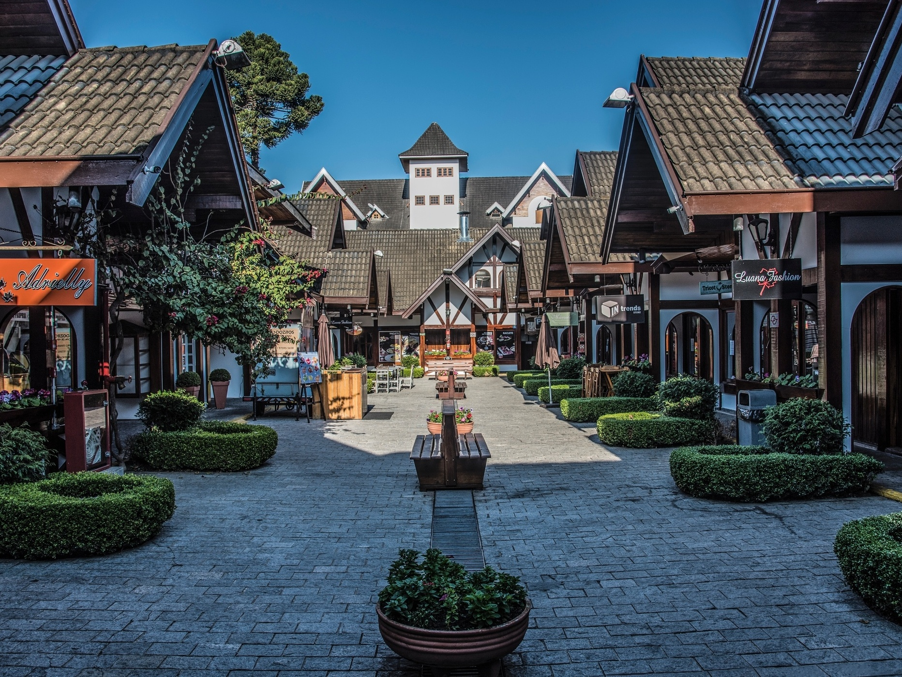

São Paulo é um estado brasileiro da região Sudeste. Trata-se da unidade de federação mais populosa do país, com 46 milhões de pessoas, e abriga também a cidade com maior concentração de habitantes do Brasil, que é a sua capital. O estado possui clima Tropical e relevo caracterizado pela presença de planaltos e depressões. Ainda no século XX, São Paulo se tornou um dos principais centros econômicos do Brasil. São Paulo é o coração econômico da maior economia da América do Sul, e tem a maior bolsa de valores (da região). A maior cidade e a capital comercial do Brasil se tornou sede da operação de várias empresas para a América Latina.
Paulistanos consomem mais de 700 pizzas por minuto

A cidade mais antiga do Brasil é São Vicente, no litoral paulista.

Campos do Jordão, que fica a 1.628 metros acima do nível do mar, é a cidade mais alta do Brasil